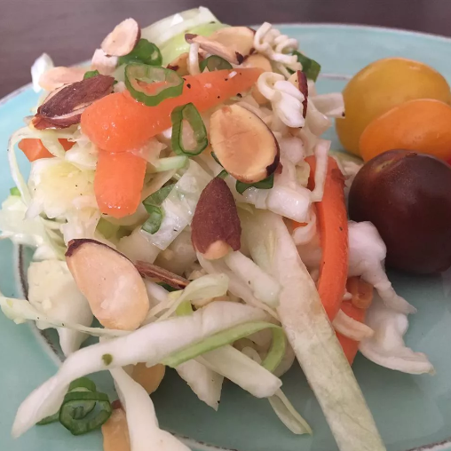

Ramen Coleslaw

Description
This is nothing like the mayonnaise based coleslaws that most people think of.
Ingredients
- 2 tablespoons vegetable oil
- 3 tablespoons white wine vinegar
- 1 (3 ounce) package chicken flavored ramen noodles, crushed, seasoning packet reserved
- ½ teaspoon salt
- ½ teaspoon ground black pepper
- 2 tablespoons sesame seeds
- ¼ cup sliced almonds
- ½ medium head cabbage, shredded
- 5 green onions, chopped
Steps
- Preheat oven to 350 degrees F (175 degrees C).
- In a medium bowl, whisk together the oil, vinegar, sugar, ramen noodle spice mix, salt and pepper to create a dressing.
- Place sesame seeds and almonds in a single layer on a medium baking sheet. Bake in the preheated oven 10 minutes, or until lightly brown.
- In a large salad bowl, combine the cabbage, green onions and crushed ramen noodles. Pour dressing over the cabbage, and toss to coat evenly. Top with toasted sesame seeds and almonds.